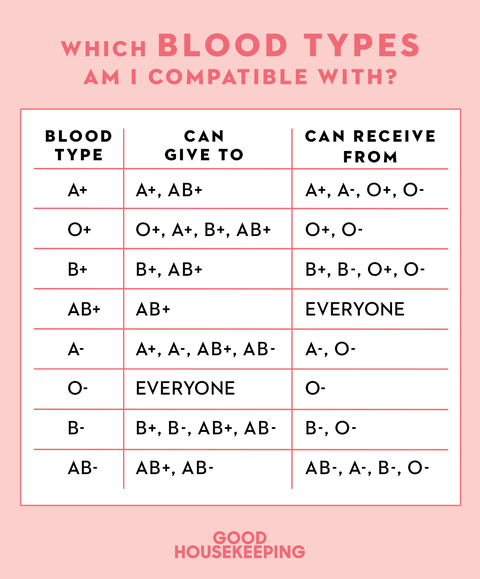

Overview
Blood donation is a voluntary procedure that can help save lives. There are several types of blood donation. Each type helps meet different medical needs.
Any healthy adult, both male and female, can donate blood. A healthy individual can safely donate one unit of blood, that is, 350 ml. Men can donate safely once in every three months while women can donate every four months. However, there are certain factors you need to fulfill to be considered as a donor.
Whole blood donation
Whole blood donation is the most common type of blood donation. During this donation, you donate about a pint (about half a liter) of whole blood. The blood is then separated into its components — red cells, plasma and sometimes platelets.
Who is Eligible For Blood Donation?
- Weight: The donor should not weigh less than 45 kgs
- Pulse: The pulse rate of the donor should be normal(60 to 100 beats per minute)
- Body temperature: Normal body temperature is 98.6°F (37°C)
- Hemoglobin: It should not be less than 12.5 grams per deciliter
- Blood pressure: Systolic and diastolic blood pressure should be within normal range (120/80 mm Hg)
- Age: Donors should be in the age group of 18 – 65 years

Who is NOT Eligible For Blood Donation?
- Suffer from common health problems such as cold, flu, sore throat, cold sore, stomach infection or any other infection.
- Had any dental procedures done such as filling, cleaning or restoration (the day before the donation). If he had an extraction, surgery, root canal, crown, root planing, gum autograft or implant in the last three days before going for a blood donation.
- Are diabetic and taking insulin injections to manage diabetes. However, if you have your blood glucose level under control with diet or oral medications, then you can donate blood.
- Fall under high risk category such as have a history of genital ulcers, multiple sex partners or drug addictation.
- Have hepatitis B, hepatitis C, tuberculosis, leprosy, human immuno-deficiency virus (HIV), heart disease, epilepsy, bleeding disorders, thalassemia, sickle cells anemia and cancer.
- Have had shots for any of the conditions such as cholera, typhoid, diphtheria, tetanus, plague, gamma globulin in the past 15 days and rabies vaccination in the last 1 year.
- Have any tattoos or acupuncture done in the last 12 months or have have had tattoo removal surgery in the last six months.
- Have been treated for malaria in the last 3 months or are residing in malaria endemic areas from the last three years.